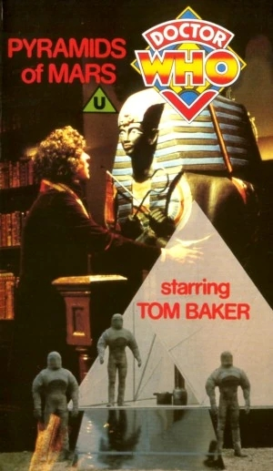
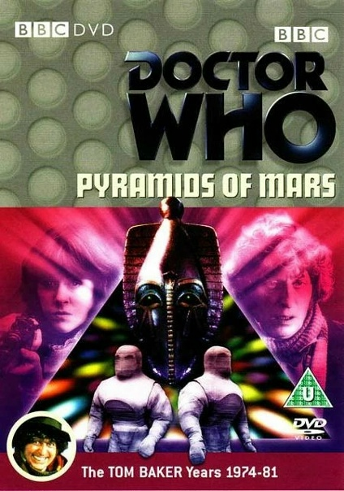
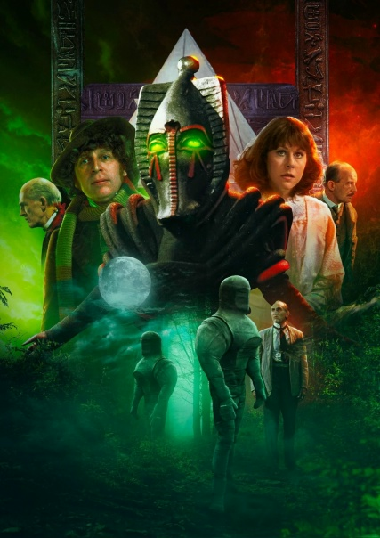

Эра Четвертого Доктора (13 сезон)
<<< НАЗАД ||| 3. Пирамиды Марса ||| ДАЛЬШЕ >>>
Субтитры: Русские и Английские |  |
|---|---|
с обновленными спецэффектами Субтитры: Русские и Английские | |
версия с фанатским обновлением визуальных эффектов (cunningmunki) Субтитры: Русские и Английские | |
Субтитры: отсутствуют | |
с обновлением визуальных эффектов (cunningmunki) Субтитры: отсутствуют | |
Субтитры: Русские {RebelProject} и Английские | |
Pyramids of Mars
Дата выхода: 27 октября - 15 ноября 1975
Формат: 4 эпизода по 25 мин.
 |
ТАРДИС оказывается внутри викторианского особняка в Англии 1911 года — и почти сразу Доктор и Сара Джейн чувствуют неладное: дом будто живёт своей жизнью, а его обитатели скрывают мрачную тайну. Раскопки профессора Скармана пробудили древнюю угрозу — Сутеха, могущественного врага осирианцев, чьё влияние сплетает воедино инопланетную опасность и мотивы египетской мифологии. Пока особняк наполняется ожившими стражами гробниц, Доктор ищет способ сдержать силу, способную стереть жизнь с лица Земли, а Сара Джейн сталкивается с ловушками, где ошибка стоит слишком дорого. Атмосферная смесь «мумийного» хоррора и космической фантастики, признанная одной из лучших серий эпохи Четвёртого Доктора.
 VHS - октябрь 1985 |  DVD - 1 марта 2004 |  Blu-ray - 20 октября 2025 * Версия в нашей группе |
|---|





Трейлер: